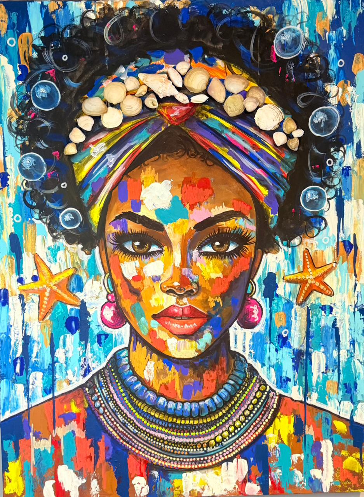
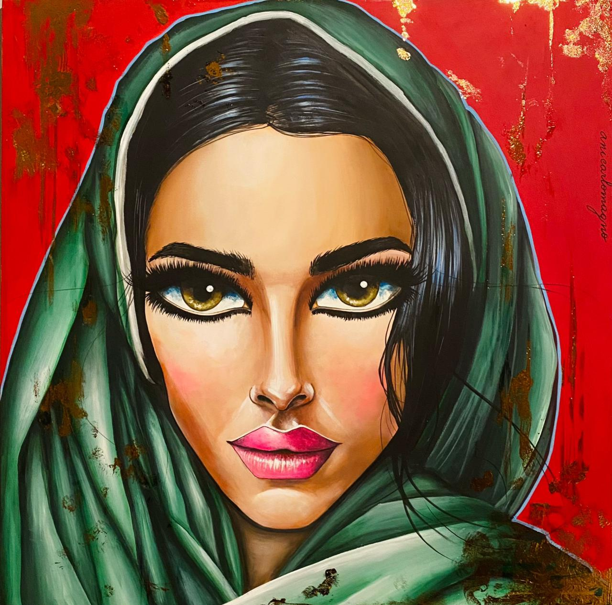
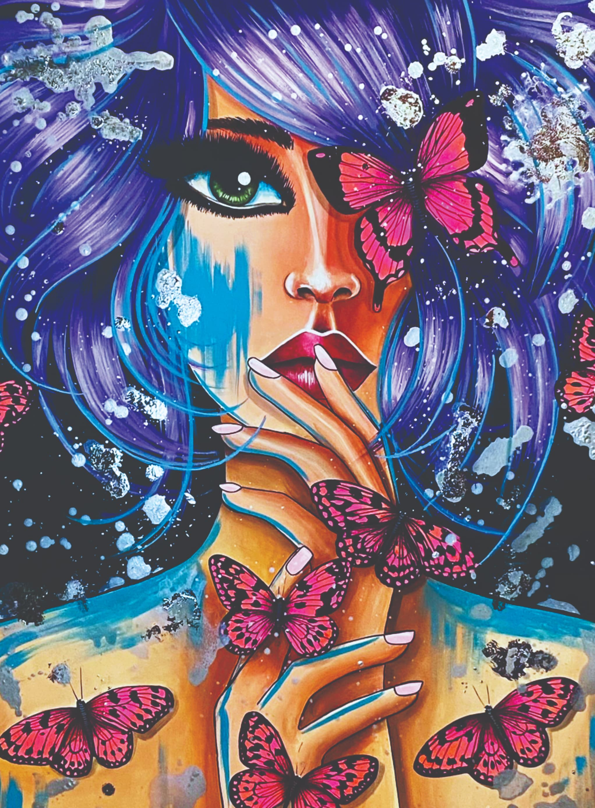
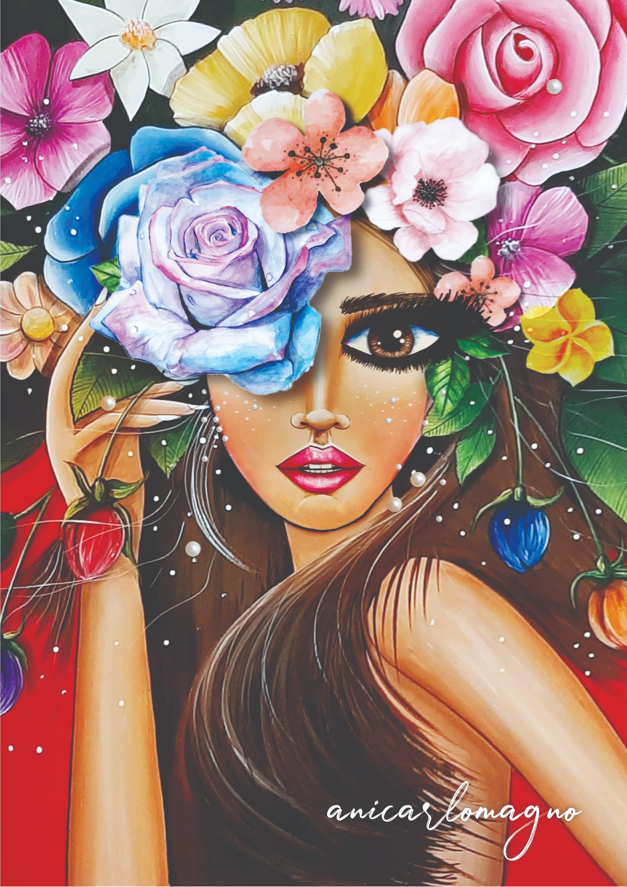
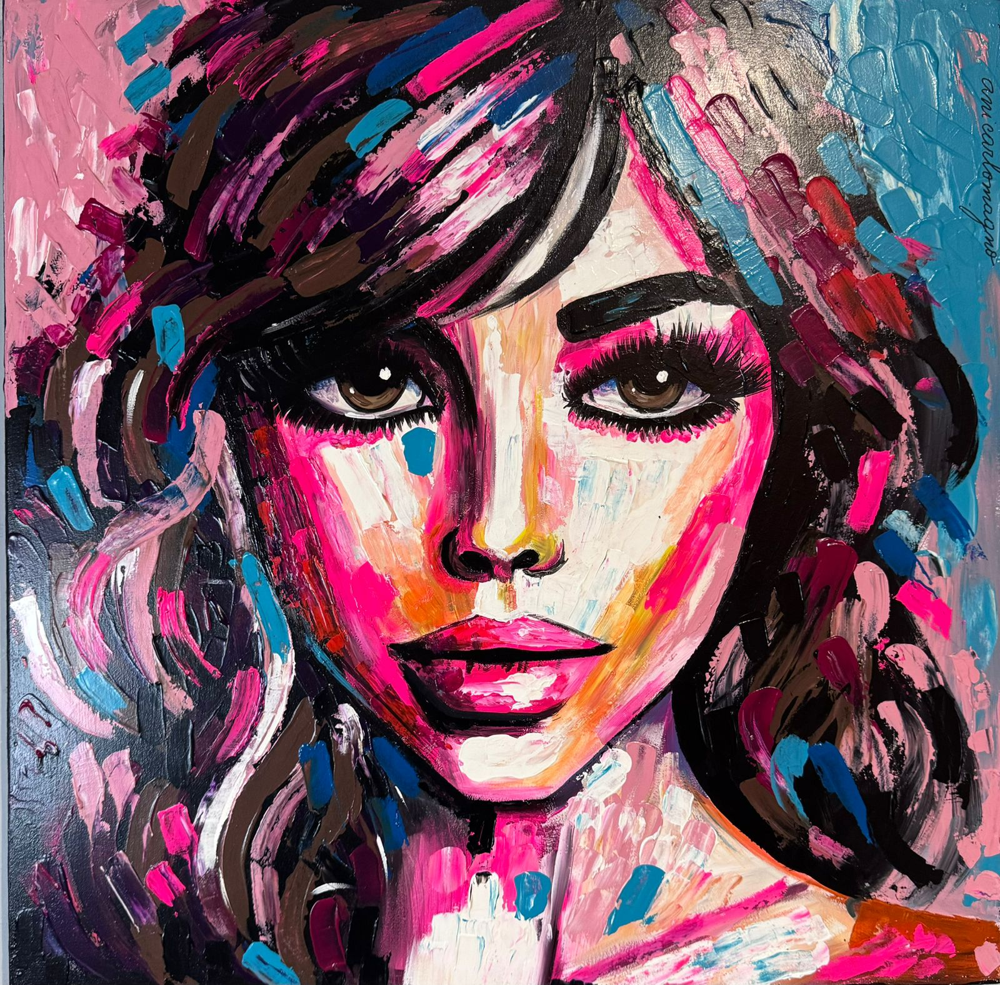
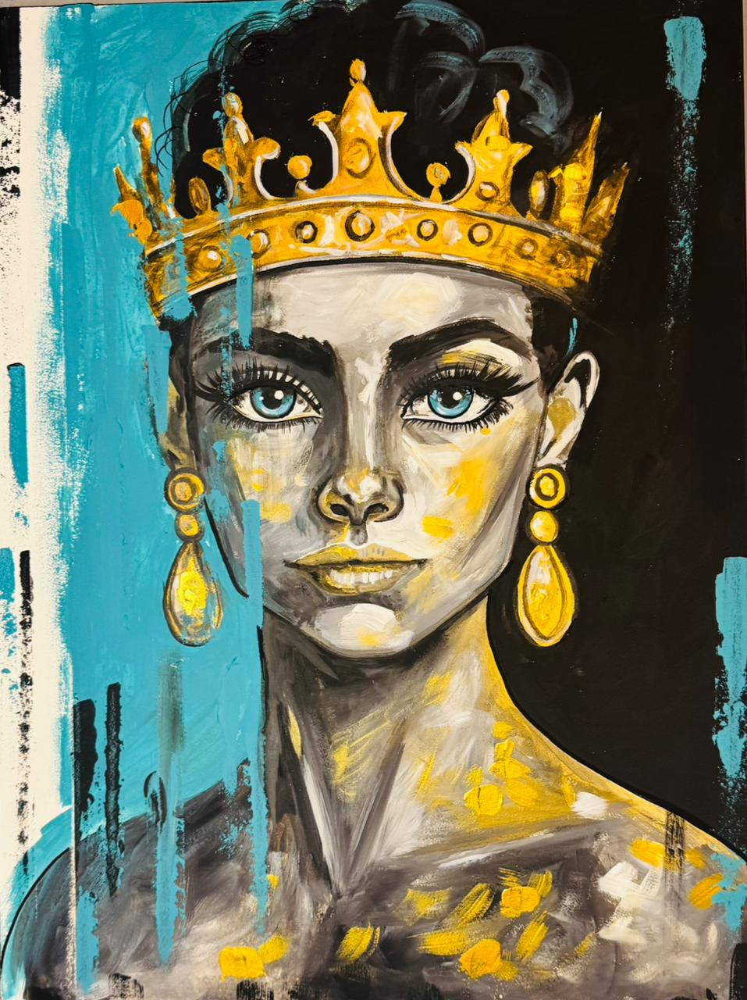

Bahía
- Técnica
- Acrílico sobre bastidor de madera
- Medida
- 80 × 60 cm
- Estado
- Disponible
Te paso el precio y cómo es el envío a todo el país.
Prototipo B, Editorial. Lo marcado como Provisorio lo completa Ani. Ver las tres direcciones
Pinto mujeres de ojos grandes, un símbolo de mi propio camino hacia la visibilidad y la expresión.

Provisorio Serie de ejemplo armada para el prototipo. Ani define las series y escribe dos o tres líneas sobre cada una.




Te paso el precio y cómo es el envío a todo el país.
Provisorio [En palabras de Ani: cómo pasó de su primera forma de pintar a la actual, y qué se mantuvo: las mujeres de ojos grandes, el color.]
[Años] [Dos líneas de Ani sobre esa etapa.]


[Años] [Dos líneas de Ani sobre lo que cambió: el gesto, la espátula, la intensidad.]


Provisorio Obras elegidas por nosotros como ejemplo: Ani confirma a qué etapa pertenece cada una.
Escribime por WhatsApp y te paso precio, medidas y envío. También pinto obras y agendas personalizadas.